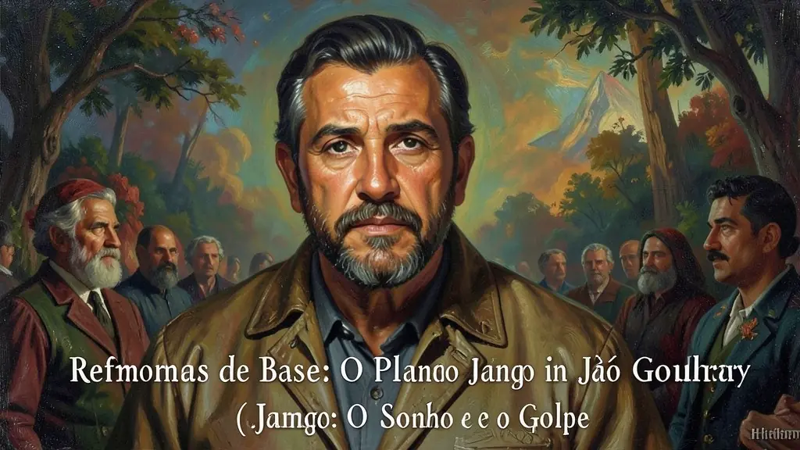
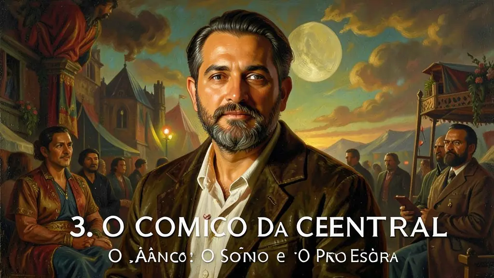

Capítulo 01
1. A Campanha da Legalidade: Resistência no Sul
Enquanto os generais no Rio diziam que Jango não assumiria, Leonel Brizola transformou o porão do Palácio Piratini em uma rádio de resistência (Rede da Legalidade). O povo saiu às ruas com armas na mão e a Brigada Militar gaúcha prometeu lutar. Esse impasse forçou o acordo do parlamentarismo, provando que o povo brasileiro estava disposto a brigar pela letra da Constituição.
Capítulo 02
2. Reformas de Base: O Plano de Jango
Jango via um Brasil arcaico: milhões de sem-terra e milhões de analfabetos. Suas reformas eram o remédio: dar terra ao camponês, escola ao pobre e voto a quem não sabia ler. Ele desafiou os latifundiários e o capital estrangeiro. Para as elites rurais, as Reformas de Base eram o fim do mundo; para o povo trabalhador, eram a esperança de um país moderno e justo.

Capítulo 03
3. O Comício da Central: O Ápice da Pressão
Em 13 de março de 1964, 150 mil pessoas ouviram Jango prometendo a reforma agrária na marra. O exército viu nesse comício a quebra da hierarquia militar e a confirmação de que Jango iria dar um golpe para se tornar um ditador socialista. O clima de 'tudo ou nada' estava lançado. Ali, Jango esticou a corda até que ela arrebentasse dez dias depois.

Capítulo 04
4. A Marcha da Família: O Golpe Civil-Militar
As senhoras católicas e a classe média, apavoradas com a propaganda anticomunista, foram às ruas pedindo a intervenção dos militares. A 'Marcha da Família com Deus pela Liberdade' deu ao exército o 'convite popular' que eles precisavam para depor o presidente. O golpe não foi só de soldados; foi um movimento de partes barulhentas da sociedade que viam no progresso social um perigo espiritual.
Capítulo 05
5. 31 de Março: O Brasil no Silêncio
Os tanques saíram de Minas Gerais em direção ao Rio. Jango não autorizou os sargentos a reagirem. Ele viajou para o Rio Grande do Sul e depois para o Uruguai. O Congresso declarou a presidência 'vazia' enquanto Jango ainda estava em solo brasileiro. Começavam os 21 anos de sombra. Jango morreu no exílio, anos depois, sem nunca ter retornado ao país que tentou reformar.
O governo de João Goulart (Jango), entre 1961 e 1964, representou a tentativa mais radical de reformas sociais dentro do pacto democrático brasileiro. Seu projeto de 'Reformas de Base' propunha mudanças estruturais profundas nas áreas agrária, urbana, educacional e eleitoral, visando integrar as massas trabalhadoras à cidadania plena. No entanto, o clima de polarização da Guerra Fria e a oposição feroz das elites conservadoras e de setores militares transformaram o apoio popular de Jango em um pretexto para o golpe, alegando uma suposta ameaça comunista que nunca se materializou.
A crise institucional começou com a renúncia de Jânio Quadros e a tentativa de impedir a posse de Jango pelos ministros militares. A 'Campanha da Legalidade', liderada por Leonel Brizola, garantiu a posse em um regime parlamentarista de compromisso, que durou até o plebiscito de 1963. O retorno ao presidencialismo permitiu a Jango acelerar a pauta das reformas, mas também intensificou a reação da direita, organizada em movimentos como o IPES e o IBAD, que articulavam a desestabilização do governo com apoio financeiro e ideológico externo.
Para o Enem, o estudo do governo Jango é essencial para entender as raízes da ruptura de 1964. A queda de Goulart não foi apenas um evento militar, mas o resultado de um choque entre um projeto de desenvolvimento nacional-reformista e um projeto associado ao capital internacional e à preservação do latifúndio. Compreender o contexto das Reformas de Base permite analisar como temas como a desigualdade fundiária e a soberania econômica são questões centrais que atravessam toda a história contemporânea do Brasil.
Fonte: FERREIRA, Jorge. João Goulart: Uma Biografia. Rio de Janeiro: Civilização Brasileira, 2011.
Atividades interativas
Questões para fixar
O que foram as 'Reformas de Base' propostas pelo governo de João Goulart entre 1961 e 1964?
A Campanha da Legalidade, liderada por Leonel Brizola em 1961, tinha como objetivo principal:
Qual foi o principal motivo que levou os ministros militares a tentarem impedir a posse de João Goulart em 1961?
Qual foi o resultado do plebiscito popular realizado em 1963?
Qual foi o evento que marcou o início do movimento golpista contra João Goulart em 1964?